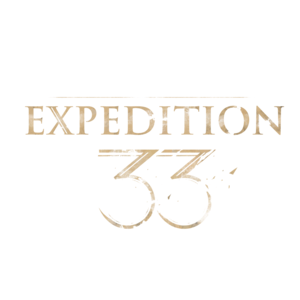

Historia
Ambientado en un entorno de fantasía oscura de la Belle Époque, el juego sigue a los voluntarios de la Expedición 33 en su misión de destruir a la Paintress, un ser que causa el Gommage anual, que elimina a aquellos de edad decreciente o superior.